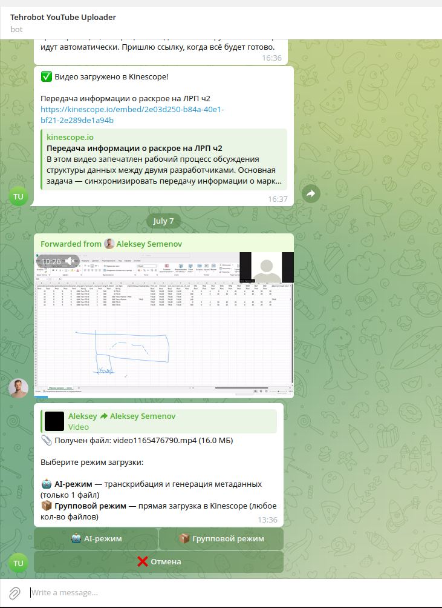
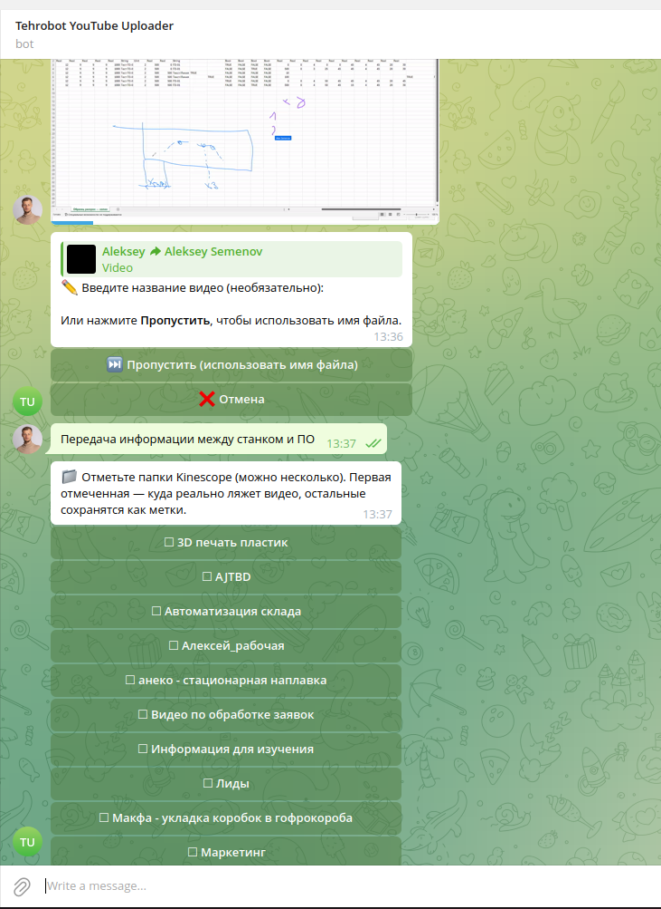
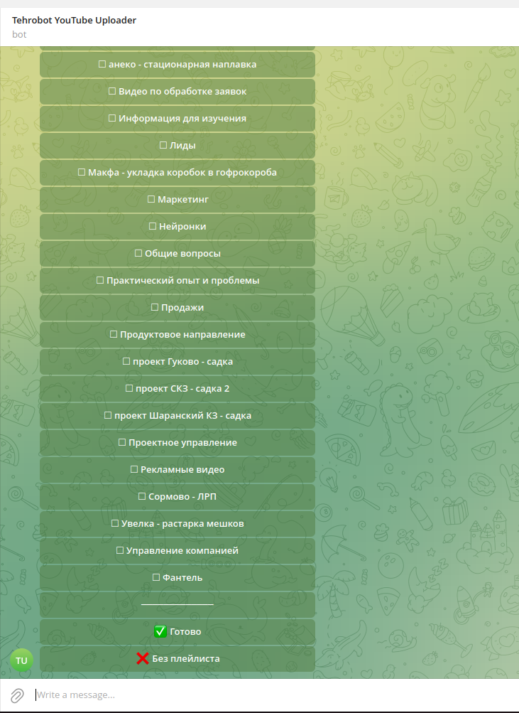
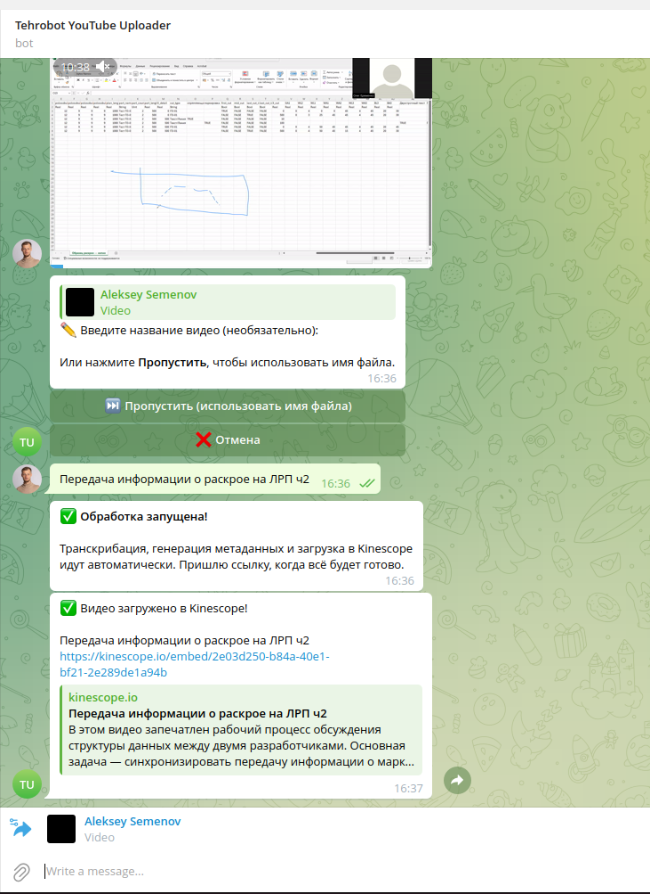
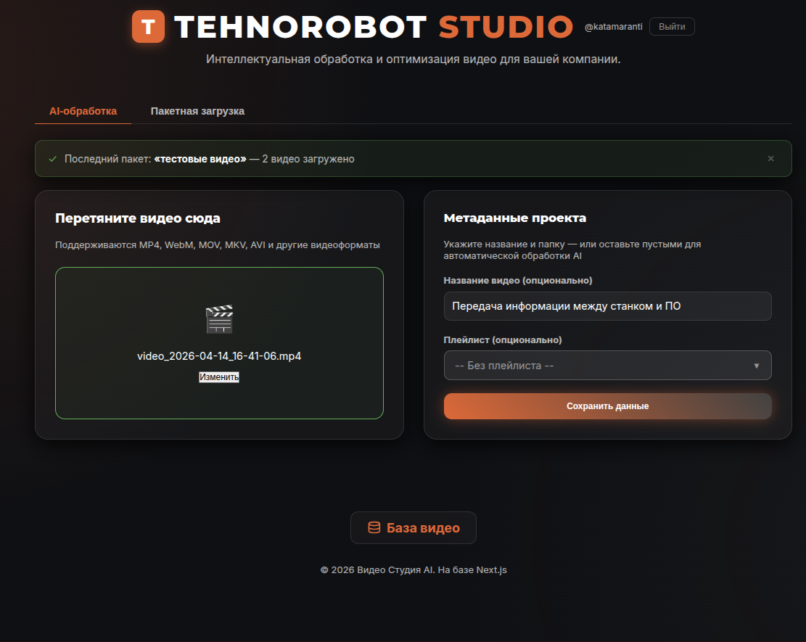
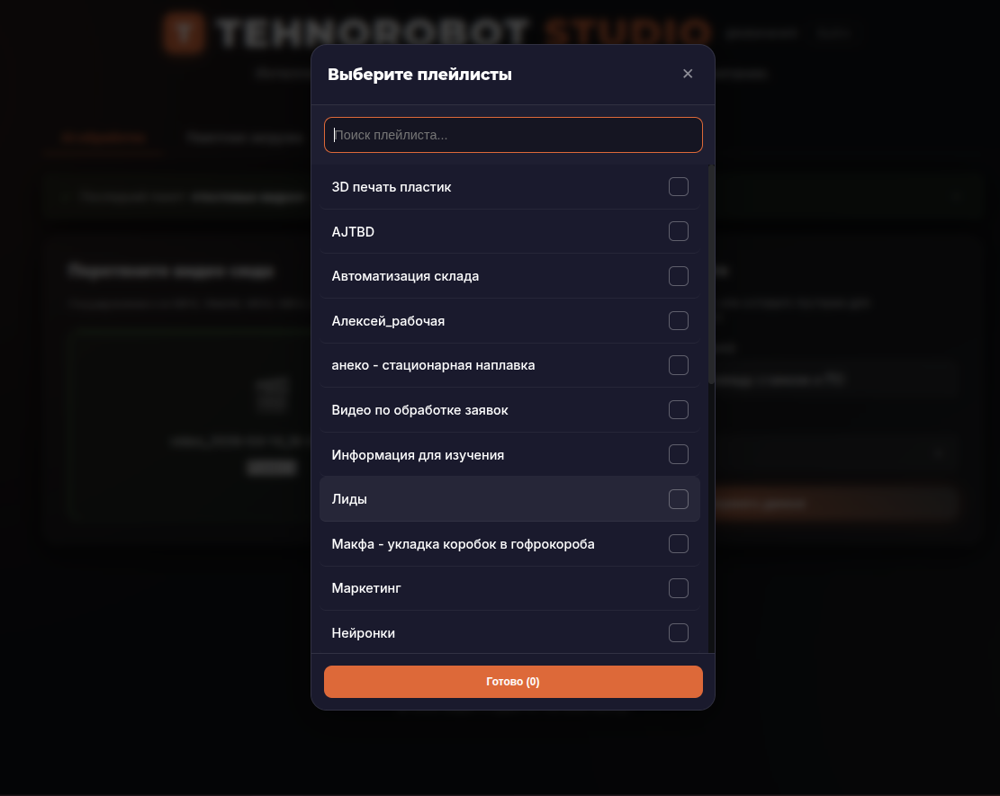
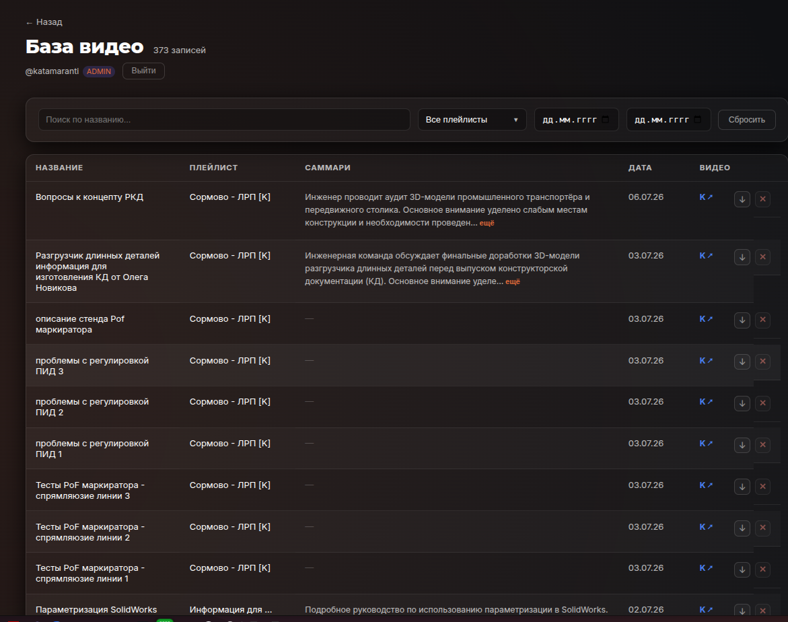
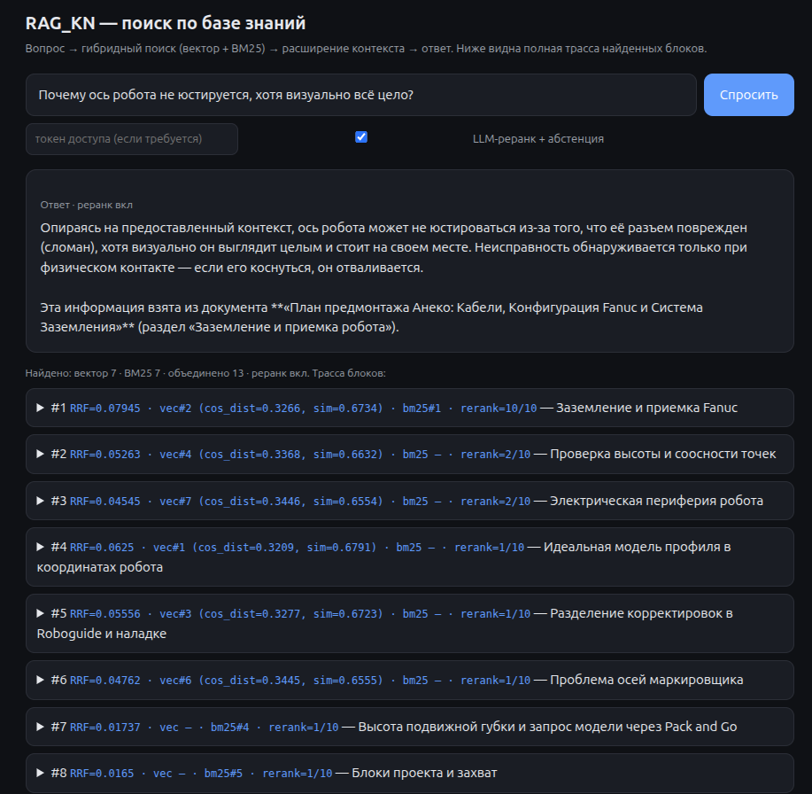
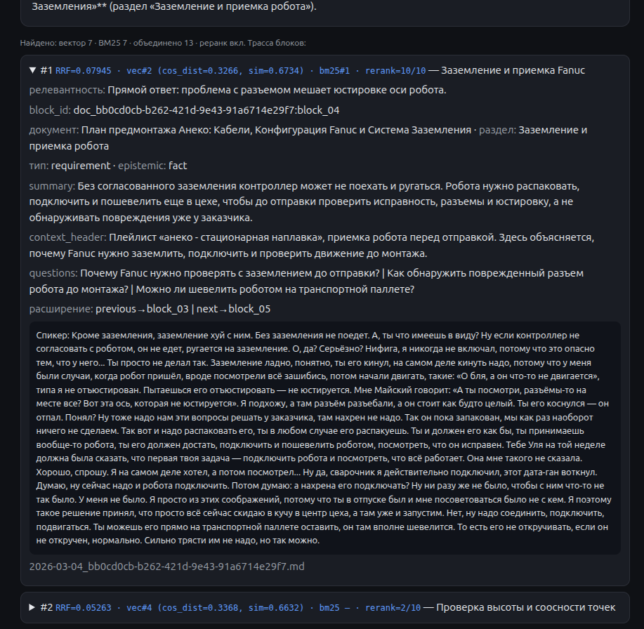

Вход A
Telegram-бот
Нулевой порог входа: снял видео — отправил в чат. Умеют все.
Система, которая превращает зум-встречи, испытания оборудования и производственные видео в searchable knowledge base: загрузка через Telegram или браузер, автоматическая транскрибация, RAG-поиск — и ответ, подкреплённый фрагментами транскриптов, на которых он основан.
В компании накапливались сотни часов записей: зум-встречи, апробации линий, испытания оборудования, разборы нестандартных ситуаций. Формально данные сохранены — практически ими невозможно пользоваться: чтобы найти нужный фрагмент, приходилось пересматривать часы видео.
Вход в систему должен быть таким же простым, как отправить видео в Telegram или загрузить файл в браузере.
Главный принцип — не заставлять сотрудников менять поведение. Никаких форм, обязательных тегов и регламентов: дальше оба сценария входа работают через один пайплайн обработки.
Нулевой порог входа: снял видео — отправил в чат. Умеют все.
Управляемая загрузка: пакеты файлов, метаданные, просмотр и редактирование базы.
End-to-end система: от точек входа для сотрудника до хранения, обработки в очередях, поиска и выдачи ответа вместе с релевантными фрагментами транскриптов.
Где обсуждали проблему с датчиком на линии?









Видео перестало быть пассивным архивом: записи встреч, испытаний и технических обсуждений доступны для поиска. Компания сохраняет знания даже при смене команды.
Это не Telegram-бот. Это инфраструктура знаний.
Обход ограничений Bot API через MTProto; стабильная работа при нестабильных маршрутах до Telegram DC — proxy/WireGuard-цепочка.
Очереди задач: приём, хранение больших файлов, транскрибация и индексация — без блокировки пользовательских сценариев.
Из сырых транскриптов — в чанки и индекс, по которым находится конкретный ответ, а не «где-то в этом часе записи».
Единый пайплайн за двумя простыми точками входа: никакого обучения и регламентов.
Я могу спроектировать систему, которая превратит эти материалы в searchable knowledge base: с загрузкой через Telegram или браузер, транскрибацией, RAG-поиском и удобным интерфейсом для сотрудников.
Git не публикую — код показываю на созвоне.